Simplicial
2 Technical Things
-
Definition 2.2. A category \(C\) is \(\kappa \)-accessible if it satisfies:
-
1. \(C\) has \(\kappa \)-filtered colimits
-
2. \(C\) is generated under \(\kappa \)-filtered colimits by a set of objects
-
3. Objects in \(C\) are \(\kappa \)-small (equivalently the generators are small)
-
4. \(C\) is locally small
-
For regular cardinals \(\tau \gg \kappa \) if \(\tau _0 < \tau , \kappa _0 < \kappa \implies \tau _0^{\kappa _0} < \tau \)
-
Proof. Let \(S\) be the generating set of \(\kappa \)-compact objects, and let \(X\) be a \(\kappa \)-compact object. Presenting \(X\) as a \(\kappa \)-filtered colimit of objects in \(S\), we learn that \(1_X\) must factor through one of the objects of \(S\). Thus, \(X\) is a retract of an object of \(S\). but any object of \(S\) has a set of subobjects since the \(S\)-Yoneda embedding is faithful, so there is a set of such \(X\). □
-
Proof. \(\Delta \) can be thought of as the full subcategory of categories generated by digraphs that are finite paths. Thus we need to show the category of objects over \(\Delta ^n\times \Delta ^m\) is connected. But given an object in this over category, we can adjoin a terminal object, which is sent to the terminal object of \(\Delta ^n\times \Delta ^m\), But then any two such maps over \(\Delta ^n\times \Delta ^m\) are connected via the inclusion of the terminal object. □
There is an involutions of \(\Delta \) given by reversing the arrows of the partial orders. The action of this on simplicial objects is called the opposite.
Let \(\Delta _n\) be the subcategory of \(\Delta \) of ordinals of size \(\leq n\), and call a functor \(\Delta _n^{op}\to C\) a \(n\)-truncated simplicial object in \(C\). \((\SSet )_n\) will denote the category of \(n\)-truncated simplicial sets. Let \(C\) be complete and cocomplete. The left and right Kan extensions \(C^{\Delta ^{op}_n} \to C^{\Delta ^{op}}\) of the inclusion \(i_n:\Delta _n\to \Delta ^{op}\) are given by \((i_n)_!X= \colim _{n\geq k \to m}X_k, (i_n)_*X = \lim _{m\to k\leq n}X_k\). \((i_n)^*(i_n)_* = 1=(i_n)^*(i_n)_!\).
The other unit/counits are called the skeleta/coskeleta. \((i_n)_!(i_n)^*\to 1\) is the \(n\)-skeleton \(\sk _n\), and \(1\to (i_n)_*(i_n)\) is the \(n\)-coskeleton \(\cosk _n\).
Let \(S,J\) be classes of arrows.
If \(S\) is all the arrows, we supress it from the terminology. In this case, \(2\) out of \(6\) implies \(2\) out of \(3\) which implies \(3\) out of \(4\). \(2\) out of \(6\) is satisfied by isomorphisms.
The adjective \(n\)-trivial will mean that we add \(\partial \Delta ^m\to \Delta ^m, m<n\) to the generators of the saturated set. When \(n=\infty \), we can just say trivial, and when \(n=-2\), this doesn’t mean anything.
If \(L\) is a class of morphisms in \(C\), define \(L^{\oslash }\) to be the class of morphisms \(\{ f| L\oslash f \}\). Dually define \(\phantom {}^{\oslash }J\). \(\phantom {}^{\oslash }J\) is always weakly saturated.
-
Proof. By definition \(\phantom {}^{\oslash }(J^{\oslash })\oslash J^{\oslash }\), showing \(J^{\oslash } \subset \phantom {}^{\oslash }(J^{\oslash })^{\oslash }\). But \(J \oslash \phantom {}^{\oslash }(J^{\oslash })^{\oslash }\) since \(J \subset \phantom {}^{\oslash }(J^{\oslash })\) giving the other inclusion (this works for any binary relation). □
\(\phantom {}^{\oslash }(J^{\oslash })\) is like a saturation of \(J\), and often agrees with the weak saturation of \(J\).
A fibrant simplicial set is sometimes called a Kan complex, and an inner fibrant simplicial set is sometimes called an \(\infty \)-category or \((\infty ,1)\)-category or quasicategory.
As \(\SSet \) is a presheaf category, we can get natural adjunctions by left Kan extension whenever we have a cosimplicial object in some cocomplete category \(C\). For example, the cosimiplicial category where \(\Delta ^n\) gets sent to the category generated by \(n\) morphisms in a row (also denoted \(\Delta ^n\)) gives the nerve functor with adjoint the homotopy category. The standard simplices in \(\Top \) or \(\CGHaus \) give geometric realization \(|\cdot |\) and the singular set \(S\). Another example is a cosimplicial object in \(\SSet \) given by taking an ordered set to the nerve its poset of subset. This extends to a functor \(\sd :\SSet \to \SSet \), which is essentially barycentric subdivision, and its right adjoint is denoted \(\Ex \). The study of this functor is due to Kan I believe. There is a natural map \(h: \sd X \to X\) called the last vertex map that sends a vertex in \(\sd \Delta ^n\) to the last vertex of the subset it corresponds to. The adjoint of this is a map \(X \to \Ex X\).
-
Proof. First let’s think about products. We can reduce to the case of simplices as follows. Let \(K,L\) be simplicial sets. Since products distribute over colimits, we have
\[|K \times L| =|\int ^mK_m\cdot \Delta ^m \times \int ^nL_n\cdot \Delta ^n| = |\int ^{m,n}K_m\cdot L_n\cdot \Delta ^m\times \Delta ^n| \]
\[= \int ^{m,n}K_m\cdot L_n \cdot |\Delta ^m\times \Delta ^n| = \int ^{m,n}K_m\cdot L_n \cdot |\Delta ^m|\times |\Delta ^n| = \int ^mK_m \cdot |\Delta ^m| \int ^n L_n \cdot |\Delta ^n|\]
\[ = |K|\times |L|\]
Now the natural map \(|\Delta ^n \times \Delta ^m|\to |\Delta ^n|\times |\Delta ^m|\) is a continuous map of compact Hausdorff spaces, so it a homeomorphism iff it is a bijection. Suppose we have an element of \(|\Delta ^n|\times |\Delta ^m|\), given by a sequence of numbers \(c_i,d_j\), which are the components for the standard embedding of a simplex. Define \(c_i' = \sum _{k\leq i} c_i\) and similarly for \(d'_j\), and order the set consisting of \(c_i',d_j'\). Now define a simplex on vertices by going through the ordering and everytime you run into a number that is one of the \(c'_i\), increment the index of the \(\Delta ^n\) vertex, and similarly for the \(d'_i\) and the \(\Delta ^m\) vertex. It is easy to see that this is the unique nondegenerate simplex hitting \(c_i,d_j\), and it hits it in a unique point by taking the linear combination that is the incremental differences of the ordered set of numbers.
Equalizers are easier. First observe that an inclusion of simplicial sets induces an inclusion of a closed set upon realizing. This implies that the comparison map is an inclusion. For surjectivity one has to observe that for any point equalized in the realization, the nondegenerate simplex whose interior it is in is equalized, so it is in the image. □
-
Proof. A zero simplex of \(\sd \Delta ^n\) is given by a subset of the vertices \(v_i\) of \(\Delta ^n\), which we can send to the barycenter of that set in \(|\Delta ^n|\). We can then extend to \(\sd \Delta ^n\) by linear interpolation. Rewrite \(\sum _i \alpha _i v_i = \sum _j t_j X_j\), where the \(t_j\) are in increasing order and \(X_j\) is a sum of \(v_i\)s, so we have just regrouped the \(v_i\)s with the same coefficient into one \(X_j\). Define \(N_j = \sum _{k\geq j} (n_j+1)\) where \(n_j\) is the number of \(v_i\) in \(X_j\).
Then \(\sum _j t_jX_j = \sum _j (t_j-t_{j-1})N_j(\frac {1}{N_j}\sum _{k\geq j} X_k)\). \((\frac {1}{N_j}\sum _{k\geq j} X_k)\) is a barycenter, and \(\sum _j (t_j-t_{j-1})N_j = 1\) so we have written (uniquely) any element of \(\Delta ^n\) as an element of \(|\sd X|\). □
2.1 Generators of anodyne morphisms
-
Proof. It is easy to see the sets described are saturated. Given any inclusion \(X \subset Y\), let \(Y_n(X)\) denote the preimage of the n-skelaton of \(Y/X\) as a pointed simplicial set. Then since \(Y_{-1}(X) = X, Y_n(X) \subset Y_{n+1}(X), \cup _i Y_{i}(X)=Y\), it suffices to show that the inclusion \(Y_{n-1}(X) \to Y_{n}(X)\) is generated by \(\partial \Delta ^n \subset \Delta ^n\). But there is a pushout diagram
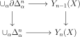
where alpha runs over all nondegenerate \(n\)-cells in \(Y/X\). □
Note: the inclusions \(\partial \Delta ^n\times \Delta ^m \cup \Delta ^n \times \partial \Delta ^m \subset \Delta ^n\times \Delta ^m\) should also generate inclusions.
-
Proposition 2.18 (Generators of left anodyne extensions). The three classes of maps below generate the left anodyne extensions:
-
1. \(\Lambda _i^n \subset \Delta ^n\), \(0 \leq i <n\)
-
2. \(\Delta ^1\times \partial \Delta ^n \cup \Lambda _1^1 \times \Delta ^n \subset \Delta ^1\times \Delta ^n\)
-
3. \(\Delta ^1\times X \cup \Lambda _1^1 \times Y \subset \Delta ^1\times Y\) for all \(X \subset Y\)
-
-
Proof. \((2) \iff (3)\): This follows from Lemma 2.17 after observing that the class of inclusions \(X \to Y\) for which \((3)\) is true is saturated.
\((2) \implies (1)\): Let \(X_n\) be \(\Delta ^1\times \partial \Delta ^n \cup \Lambda _1^1 \times \Delta ^n\), and consider the map \(X_n \to \Lambda _i^{n+1}\) induced by the endomorphism of \(X_n\) determined on vertices by sending \((1,j)\) to \((0,j)\) for \(j \neq i\). The pushout along this map of the inclusion \(X \to \Delta ^1\times \Delta ^n\) contains \(\Delta ^{n+1}\) as a retract relative to \(\Lambda _i^{n+1}\).
\((1)\implies (2)\): First notice that the \(n-1\) skeleta agree, so there is only need to add \(n+1\)-simplices. Let \(\sigma _i\) denote the \(n+1\) simplex of \(\Delta ^1\times \Delta ^n\) where the \(\Delta ^1\) component starts being \(1\) on the \(i^{th}\) vertex. Then in decreasing order of \(i\), extend along \(\Lambda _i^n\) to \(\sigma _i\) to build up \(\Delta ^1\times \Delta ^n\) out of \(\Delta ^1\times \partial \Delta ^n \cup \Lambda _1^1 \times \Delta ^n\) □
-
Corollary 2.19 (Generators of anodyne extensions). The three classes of maps below generate the anodyne extensions:
-
1. \(\Lambda _i^n \subset \Delta ^n\)
-
2. \(\Delta ^1\times \partial \Delta ^n \cup \Lambda _i^1 \times \Delta ^n \subset \Delta ^1\times \Delta ^n\)
-
3. \(\Delta ^1\times X \cup \Lambda _i^1 \times Y \subset \Delta ^1\times Y\) for all \(X \subset Y\)
-
-
Proposition 2.20 (Generators of inner anodyne extensions). The classes of maps below generate the inner anodyne extensions:
-
1. \(\Lambda _i^n \subset \Delta ^n\), \(0<i<n\)
-
2. \(\Delta ^2\times \partial \Delta ^n \cup \Lambda _1^2 \times \Delta ^n \subset \Delta ^2\times \Delta ^n\)
-
3. \(\Delta ^2\times X \cup \Lambda _1^2 \times Y \subset \Delta ^2\times Y\) for all \(X \subset Y\)
-
-
Proof. \((1) \implies (2)\): First observe that the \(n-1\)-skeleton agrees with that of \(\Delta ^2\times \Delta ^n\). Let \(\sigma '_i,i>0\) be the nondegenerate \(n+1\)-simplices projecting onto \(s_i\Delta ^n\), that switches from \(0\) to \(2\) in \(\Delta ^2\) at the \(i^{th}\) vertex. Let \(\sigma _{i,0}\) be the nondegenerate \(n+2\)-simplex projecting to \(s_is_i\Delta ^n\), and let \(\sigma _{i,1},i>0\) be the nondegenerate \(n+2\)-simplex projecting to \(s_{i}s_{i-1}\Delta ^n\). Then in descending order of \(i\), we can attach \(\sigma '_i\), then \(\sigma _{i,0}\), then \(\sigma _{i,1}\) until we have build up \(\Delta ^2\times \Delta ^n\).
\((2) \iff (3)\): This follows from Lemma 2.17 after observing that the class of inclusions \(X \to Y\) for which \((3)\) is true is saturated.
\((2) \implies (1)\): Fix \(0<i<n\), and consider the endomorphism of \(\Delta ^2\times \partial \Delta ^n \cup \Lambda _1^2 \times \Delta ^n \subset \Delta ^2\times \Delta ^n\), with image consisting of the vertices \((0,j), j<i\), \((1,i-1)\), and \((2,j)\), for \(j\geq i\), where all the other vertices are sent to \((1,i-1)\). The image is \(\Lambda _i^n\), and the pushout of the inclusion into \(\Delta ^2\times \Delta ^n\) along this endomorphism retracts onto the inclusion \(\Lambda _i^n \to \Delta ^n\). □
-
Proof. This follows from Lemma 2.20. □
-
Proof. Let us do the proof for left anodyne extensions, the proofs in other cases are similar. Since the inclusions \(K\subset L\) for which the lemma is true are saturated, we reduce to the case when it is \(\Delta ^1\times \partial \Delta ^n \cup \Lambda _1^1 \times \Delta ^n \subset \Delta ^1\times \Delta ^n\). But now there is a commutative square:
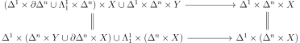
The lower map by \((3)\) of Corollary 2.19 is anodyne. □
2.2 Enriched Categories
A closed monoidal category is one where there are internal homs that are right adjoint to tensoring. This makes the category self-enriched. A \(V\)-enriched category with a (left) lax monoidal functor to \(C\) has an underlying \(C\)-enriched category, and in this case of self enrichment, the underlying category is the original, and one can use an enriched Yoneda lemma to upgrade the internal hom adjunction to an enriched adjunction. In a \(V\) enriched category \(C\) we can use an underline such as \(\ul {\Hom }(a,b)\) or \(\ul {C}(a,b)\) to denote \(V\)-homs. We say cartesian closed if the monoidal structure comes from products. The presheaf category of a category \(C\) is always a cartesian closed symmetric monoidal category by the formula \(\Map (X,Y)_Z = \Hom (X\times Z,Y)\), where \(Z \in C\). In particular this works in \(\SSet \). Moreover, there is a natural \(2\)-equivalence between \(\Set ^{C^{op}}\)-enriched categories and functors \(C^{op} \to \Cat \). The internal hom is also denoted \(Y^X\).
For every monoidal cateogory \(V\), the functor \(X \mapsto \Hom (1,X)\) is right lax monoidal, so there is an underlying category. We will use \(\Hom (a,b)\) to talk about the morphisms in the underlying category.
Given a complete and cocomplete cartesial closed symmetric monoidal category \(C\) we can form a symmetric monoidal category \(C_+\) of based objects with a map from the terminal object. The monoidal structure is the smash product, and the functor of adding a disjoint basepoint is strongly symmetric monoidal.
Now suppose \(C,D\) are \(V\)-enriched, where \(V\) is concrete, and suppose that we have an adjunction \(\adjunction {F}{C}{D}{G}\) on the underlying categories. We would like a situation where this can be upgraded to an enriched adjunction.
In other words, there is an enriched left adjoint of \(\ul {C}(b,-)\) for every \(b\).
In other words, there is an enriched right adjoint of \(\ul {C}(-,c)\) for every \(b\).
Sometimes people also say copower and power instead of tensor and cotensor.
We can think of this as a family of adjunctions parameterized by \(a\) (or symmetrically in \(b,c\)). If \(\ul {C}\) is tensored and cotensored, there is a two-variable enriched adjunction \(\ul {C}(b,\hom (a,c)) \cong \ul {C}(a\otimes b,c) \). Moreover \(\otimes \) is unital and associative, essentially giving an action of \(\ul {V}\) on \(\ul {C}\).
The pushout-product of the initial map to \(a\) with a map \(b \to c\) is just the map \(F(a,b) \to F(a,c)\). Suppose that there is a two-variable adjunction \(F,G,H\) between \(M,N,P\), and suppose that \(M\) has pushouts and \(N,P\) have pullbacks. Then Construction 2.26 applied to \(F,G^{op},H^{op}\) give an induced \(2\)-variable adjunction \(\hat {F},\hat {G},\hat {H}\).
-
Proof. This follows from construction and Lemma 2.13. □
-
Lemma 2.28. Suppose that \(C,D\) are tensored and cotensored over \(V\), and there is an adjunction \(\adjunction {F}{C}{D}{G}\) of functors on the underlying categories. Then the following data determine each other:
-
1. An enrichment of the functors and the adjunction
-
2. An enrichment of \(F\) and natural isomorphisms \(F(v\otimes m) \cong v\otimes F(m)\)
-
3. An enrichment of \(G\) and natural isomorphisms \(G(m^v)\cong G(m)^v\).
Moreover, in this case, \(G\) preserves the cotensoring and \(F\) preserves the tensoring.
-
-
Proof. It suffices to show \((1) \iff (2)\) as \((3)\) is dual to \((2)\). The point is to use the Yoneda lemma. For clarity, \(\ul {F}\) will denote enriched functors. If the adjunction is enriched, then \(\ul {D}(v\otimes \ul {F}m,n) = \ul {V}(v,\ul {D}(Fm,n)) = \ul {V}(v,\ul {C}(m,\ul {G}(n)) )= \ul {C}(v\otimes m,\ul {G}(n)) = \ul {D}(\ul {F}(v\otimes m),n)\). Conversely, if \((2)\) is satisfied, and \(U\) denoted the forgetful functor on \(\ul V\), then we can produce the counit via \(V(c,\ul C(Ga,Ga)) = C(c\otimes Ga,Ga) = D(F(c\otimes Ga),a) = D(c\otimes FGa,a) = V(c,\ul D(FGa,a))\) and the unit via \(V(a,\ul D(Fb,Fb)) = D(a\otimes Fb,Fb) = D(F(a\otimes b),Fb) = D(a\otimes b, GFb) = V(a,\ul D(b,GFb))\). □
We can transport enrichments and the property of being cotensored or tensored over \(V\) to \(V'\) provided we have an adjunction \(\adjunction {F}{V}{V'}{G}\) where the left adjoint is strongly monoidal. Moreover the \(V'\) enrichments on \(V,V'\) are compatible with the adjunction in this case.
-
Proof. If \(A \in \Set ^{D^{op}}, B \in C^{D^{op}}, d \in D\), define \((A\otimes B)_d = A_d\cdot B_d\), where \(\cdot \) is the copower, and observe that it is the tensoring, if the enrichment is given by \(\ul {\Hom }(B,C)_d = \Hom (d\otimes B,C)\). If \(C\) is complete and \(A=\colim _J d_j\), then define \(B^A\) by \(\lim _J B^{d_j}\), where \(B^{d_j}\) is given by the power \(B^{d_j}_{d} = \prod _{\Hom (d,d_j)}B\). This is a right adjoint of \(A\otimes (-)\). □
2.3 Basics of Simplicial Sets
-
Proof. By definition \(A \to B\) has the left lifting property with respect to the map above iff \(A\times L \cup B \times K \subset B\times L\) has the left lifting property with respect to \(X \to Y\). Thus this follows from Corollary 2.22. □
-
Proof. This has the same proof as Corollary 2.30. □
-
Proof. If \(g\) is a homotopy \(x\to y\), then \((g,1_y,\cdot ) = \Lambda _0^2\) can be filled into \(\Delta ^2\), giving a homotopy \(y \to x\). \(s_0x\) gives reflexivity, and if \(f:x \to y\) and \(g:y \to z\) are homotopies, then by extending \((g,\cdot ,f)\) to \(\Delta ^2\), we get a homotopy \(x \to z\). □
Define \(\pi _0(X)\) to be the connected components of \(X\).
Simplicial sets generalize categories.
-
Lemma 2.34. The nerve is fully faithful on \(1\)-categories. It’s essential image is
-
1. \(2\)-coskelatal \(\infty \)-categories
-
2. Simplicial sets with unique lifts from inner horns
-
3. Simplicial sets satisfying the Segal condition \(X_n \xrightarrow {\sim } X_1\times _{X_0} X_1\times _{X_0}\dots \times _{X_0}X_1\) from the inclusion of the spine.
-
-
Proof. First we will show that the first two descriptions of the essential image are the same. Suppowe we have a \(2\)-coskeletal \(\infty \)-category. Then we immediately get that there is a unique lift for inner horns when \(n>3\), since the inclusions of those horns are identities on the \(2\)-skelaton. If we have two composites of \(g\circ f\), \(\sigma ,\sigma '\) lifting both \(\Lambda _1^3 = (s_0 g,\cdot ,\sigma ,s_1f)\) and \(\partial \Delta ^3 = (s_0g, \sigma ,\sigma ', s_1f)\) to \(\Delta ^3\), we see by uniqueness of the lift on \(\Lambda _1^3\) that \(\sigma = \sigma '\).
Conversely given a simplicial set with unique lifts on inner horns, it is certainly an \(\infty \)-category, so it suffices to show it is \(2\)-coskelatal. To do this, it suffices to show that for \(n>2\), we can always extend maps along \(\partial \Delta ^n \subset \Delta ^n\). Uniqueness will follow from the fact that it extends an inner horn. This can be done inductivly on \(n\). Since \(n>2\), we can restrict to two different inner horns and extend to \(\Delta ^n\). Then the uniqueness of lifts for smaller \(n\) will show that the two extensions agree on the boundary, and are in particular extensions on \(\partial \Delta ^n\).
Now given such a simplicial set, rebuild the category in the obvious way. Namely, the verticies are objects, the \(1\)-simplices arrows (with the identity as the degenerate ones). The unique lifting on inner \(2\) horns gives a unique composition, the \(3\)-skelaton gives associativity, and the \(2\)-coskelativity says that maps between such simplicial sets are determined by preserving \(1\)-categorical structure.
Being a category implies the Segal condition, which in turn implies unique lifting of inner horns. □
-
Proof. \(n\)-horns for \(n>2\) can always be extended for a category, and \(1\)-horns can be extended for any simplicial set. Moreover, we see easily see that extending \(\Lambda _2^2\) and \(\Lambda _0^2\) is equivalent to every map having (left and right) inverses. Of course, if every map has a left inverse, it is already a groupoid by associativity. □
There is an explicit description of the homotopy \(1\)-category of an \(\infty \)-category. Namely, we call the \(0\)-simplices objects, \(1\)-simplices arrows. Given simplicial sets \(X,Y\), the join \(X\star Y\) is the simplicial set where its \(n\)-simplices start in \(X\) and end in \(Y\).
Let \(x,y\) be objects in an \(\infty \)-category. Then the left mapping space from \(\LMap (x,y)\) is the simplicial set whose \(n\)-simplices are the maps \(\Delta ^n\star \Delta ^0\) sending \(\Delta ^n\) to \(x\) and \(\Delta ^0\) to \(y\).
-
Proof. Extending \(\Lambda _i^n \to \LMap (x,y)\) to \(\Delta ^n\) is the same as extending \(\Lambda _i^{n+1} = \Lambda _i^n \star \Delta ^0 \to X\) to \(\Delta ^{n+1}=\Delta ^n\star \Delta ^0\), which is possible when \(0 < i \leq n\). □
Being left fibrant will be later shown to be equivalent to being a Kan complex. Two maps are left homotopic if they are the same in \(\pi _0(\LMap (x,y))\). This is an equivalence relation. They are homotopic if there is a map \(\Delta ^1\times \Delta ^1\) restricting to identities on \(\partial \Delta ^1\times \Delta ^1\) and \(f,g\) on \(\Delta ^1\times \partial \Delta ^1\).
-
Proof. Let \(\sigma \) be a left homotopy from \(f \to g\), meaning \(\partial \sigma = (g,f,1)\). Then extend the horn \((\sigma ,s_0g,\cdot ,s_0s_0d_1f)\) to \(\Delta ^3\), \(d_2\) of which is a right homotopy. Left homotopy clearly implies homotopy by having one of the \(2\)-cells be degenerate. Conversely, if \(g,f\) are homotopic, they are both either left or right homotopic to the third map in the homotopy, and so by transitivity an the fact that left and right homotopies agree, \(g,f\) are left homotopic. □
-
Proof. A map to a \(1\)-category certainly factors through \(\pi _0\LMap (x,y)\). We will show we can build a \(1\)-category out of \(\pi _0(\LMap (x,y))\) as the Hom sets. By Lemma 2.37 we can use any notion of homotopy. Since \(\Map (\Delta ^2,X) \to \Map (\Lambda _2^1)\) is a trivial Kan fibration by Corollary 2.31, any two composites are homotopic, so there is a well-defined composite up to homotopy. For associativity, if \(f\) realizes a composite \(a \circ b\), \(g\) realizes \(a\circ (b\circ c)\), \(f'\) realizes \(b\circ c\), then consider the map from \(\Lambda _{2}^{3}\) given by \((f,g,\cdot ,f')\). Extending to \(\Delta ^{n+1}\) and taking \(d_{n+1}\), we see that \(a\circ (b\circ c)\) is a realized as a composite of \((a\circ b)\circ c\). Any map to a \(1\)-category then factors uniquely through this category, so it is \(h(C)\). □
We define the homotopy \(1\)-category of spaces, denoted \(h(\Space )\) to be the category of Kan complexes and homotopy classes of maps between them. This will later be shown to be the homotopy \(1\)-category of a suitable \(\infty \)-category of spaces, \(\Space \). Similarly we can define \(h(\Space _*)\) using pointed Kan complexes.
There is a homotopy category of an \(\infty \)-category that is enriched over \(h(\Space )\), which is a better one.
-
Proof. If we are trying to lift the inclusion \(\Lambda ^n_i \to \Delta ^n\) along \(f\star g\), if \(\Lambda ^n_i\) lands in either \(Y\) or \(Y'\), then this lifts iff \(f,g\) are inner fibrations. Otherwise, we decompose \(\Delta ^n\) along where it splits between \(Y\) and \(Y'\) as \(\Delta ^i\) and \(\Delta ^{n-i-1}\), and the map \(\Delta ^i\star \Delta ^{n-i-1}\) gives the desired lift. □
We define the left cone of a simplicial set \(K\) to be \(\Delta ^0\star K\), denoted \(K^{\triangleright }\), and similarly \(K^{\triangleleft } = K\star \Delta ^0\) is the right cone. The cone point is the \(\Delta ^0\) inside of it.
-
Proof. One can define \(S_{/p}\) by \((S_{/p})_n = \Hom _{p}(\Delta ^n\star K, S)\) and note that \(\star \) commutes with colimits in each variable to deduce the universal property. □
Dually the under category is defined by the same universal property except with \(K \star Y\) instead of \(Y \star K\).
-
Proof. Assume \(f\) is right anodyne, as the other case is dual. Then the class of \(g,f\) such that the lemma is true is saturated, so it suffices to assume \(f\) is \(\Lambda ^n_i \to \Delta ^n\) and \(g\) is \(\partial \Delta ^m \to \Delta ^m\). Then \(h\) is just the inclusion of \(\Lambda ^{n+m+1}_i \subset \Delta ^{n+m+1}\). □
The same proof yields
-
Proposition 2.43. Suppose we are given a diagram of simplicial sets \(A \subset B \xrightarrow {p} X \xrightarrow {q} S\) where \(q\) is an inner fibration. Let \(r = q \circ p\), and \(p_0, q_0, r_0\) be the restrictions to \(A\) of \(p,q,r\). Then the induced map \(X_{p/} \to X_{p_0/}\times _{S_{r_0/}}S_{r/}\) is a left fibration. If in addition, \(q\) is a left fibration, then the map \(X_{/p} \to X_{/p_0}\times _{S_{/r_0}}S_{/r}\) is as well.
-
Proof. Let \(S = \Delta ^0\) in Proposition 2.43. □
Similarly, we can obtain
-
Proposition 2.45. Suppose we are given a diagram of simplicial sets \(A \subset B \xrightarrow {p} X \xrightarrow {q} S\) where either \(A \subset B\) is right anodyne and \(q\) is an inner fibration or \(A\subset B\) is anodyne and \(q\) is a left fibration. Let \(r = q \circ p\), and \(p_0, q_0, r_0\) be the restrictions to \(A\) of \(p,q,r\). Then the induced map \(X_{p/} \to X_{p_0/}\times _{S_{r_0/}}S_{r/}\) is a trivial fibration.
2.4 Left fibration characterization of Kan fibrations
Kan fibrations are left fibrations where the pushforward map on fibres are equivalences. This takes some effort to prove (can be viewed as a coherence type result), and as a special case includes the fact that left fibrant simplicial sets are Kan complexes. The main result is Proposition 2.54.
Left anodyne maps can be given by ‘left deformation retracts’:
-
Proof. There is a retraction
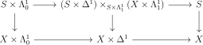
where the middle vertical map is left anodyne by Corollary 2.22. □
The following lemma is a \(1\)-categorical version of the type of coherence we are looking for. By using it in families, we will build our way to the result.
-
Proof. If \(pf\) has a left inverse \(g\), we can lift \(g\) to a left inverse \(\tilde {g}\) in \(C\) of \(f\). But \(g\) has a left inverse in \(D\), \(f'\), which we can lift to see that \(\tilde {g}\) is left invertible. But \(C\) is an \(\infty \)-category, so \(g\) being left invertible is equivalent to \(f\) being right invertible.
If \(a:x \to p(y)\) is an equivalence, we can choose a homotopy inverse \(b\) and a lift of \(b\) \(\tilde {b}\) from \(y\) to an object \(\tilde {x}\). Then we can lift a \(2\)-simplex exhibiting \(a\) as a left inverse of \(b\) to obtain the desired lift of \(a\), which is an equivalence by the first part. □
The following consequence is quite important.
-
Proof. The lifting problem is equivalent to a lifting problem for the diagram
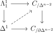
Because \(f\) is an equivalence and \(C_{\partial \Delta ^{n-2}} \to C\) is a left fibration by Corollary 2.44, the morphism in the diagram is an equivalence in \(C_{\partial \Delta ^{n-2}}\) by Lemma 2.47. By the same lemma, we can produce the desired lift since the right vertical map is a right fibration.
For the converse, if the extensions exist, then \(f\) has a left inverse by extending \((\cdot ,1,f)\) along \(\Lambda ^2_0 \subset \Delta ^2\), giving a \(2\)-simplex \(a\) with \(d_0a = f^{-1}\). By extending \((\cdot ,s_0 f,s_1 f^{-1},a)\) along \(\Lambda ^3_0 \subset \Delta ^2\), we obtain a right inverse of \(f\). □
This is the starting point for an analogous statement for left fibrations, namely the Grothendieck construction/straightening unstraightening equivalence.
We will need to construct the inverse on the \(1\)-categorical level. Let \(X \to S\) be a left fibration, and \(f:s \to t\) an arrow in \(S\). Then if \(X_s\) i the fibre of \(s\), by creating a lift as in the diagram
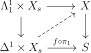
we obtain a map from \(X_s \to X_{t}\). Moreover the map
\[\Map (\Delta ^1\times X_s,X) \to \Map (\Lambda ^1_1\times X_s,X)\times _{\Map (\Lambda ^1_1\times X_s,S)}\Map (\Delta ^1\times X_s, S)\]
is a trivial fibration by Corollary 2.31, so in particular, there is a unique lift in the homotopy category of spaces, which will be denoted \(f_!\).
-
Proof. Because \(X \to S\) is an inner fibration, composition lifts along it, showing that \(f_!\) preserves composition. □
-
Proof. \(S\) is also a Kan complex, since \(S\) is left fibrant. We need to show that for any anodyne inclusion \(A \subset B\), the map \(S^B \to S^{A} \times _{T^A} T^B\) is surjective on vertices. But it is a homotopy equivalence and a left fibration by Corollary 2.30, so is surjective since the functor from Lemma 2.51 must land in nonempty spaces. □
-
Proof. We would like to show the inclusion \(\partial \Delta ^n \subset \Delta ^n\) has the left lifting property with respect to \(p\). When \(n=0\), the lifting property clearly holds. By pulling back along the simplex we are trying to lift, we can assume \(T\) is \(\Delta ^n\), in particular, \(S,T\) are \(\infty \)-categories. Choose a homotopy \(h\) from the inclusion \(\partial \Delta ^n \subset T\) to the terminal object of \(T\), and create a lift \(h'\) in \(S\). We would like to extend \(h'\) from \(\partial \Delta ^n\times \Delta ^1\) to \(\Delta ^n\times \Delta ^1\). We can extend \(\partial \Delta ^n\times 1\) to \(\Delta ^n\) by using the fact that the fibres are contractible. The rest of the cells that need to be added are inner horns (see Lemma 2.18) except for the last cell. But this can be filled in since its restriction to the initial edge lies in a fibre, so we can use Proposition 2.48. □
We come to the main result.
-
Proof. For \(1 \implies 2\), since \(p\) is a left and right fibration, every morphism \(f\) induces a covariant \(f_!\) and contravariant \(f^*\), which are inverse to each other in the homotopy category of spaces.
For \(2 \implies 1\), it suffices to show that \(p\) is a right fibration. It suffices to show that the map \(q:S^{\Delta ^1}\to S^{\Lambda ^1_0}\times _{T^{\Lambda ^1_0}}T^{\Delta ^1}\) is a trivial Kan fibration. We already know it is a left fibration, so by Lemma 2.53, we just need to show that the fibres are contractible. For an edge \(f: t \to t'\) in \(T\), we can pullback \(q\) along the map \(S_{t'} \to S^{\Lambda ^1_0}\times _{T^{\Lambda ^1_0}}T^{\Delta ^1}\) given by picking \(f\) , and it will suffice to show the fibres of the pullback \(X \to S_{t'}\) are contractible for each \(f\). But the natural map \(X \to S_{t}\) is a trivial Kan fibration since \(p\) is a left fibration. In particular \(X\) is a Kan complex. By Lemma 2.52, \(X \to S_{t'}\) is a Kan fibration. The map \(f_!\) is obtained by taking a section of the map \(X \to S_{t}\) and composing with the map \(X \to S_{t'}\), so in particular we learn that the map \(X \to S_{t'}\) is an equivalence. Since it is an equivalence and a Kan fibration, it is a trivial Kan fibration. □
-
Proof. If \(f\) is, \(g\circ f\) is by composition. Conversely, if \(g\circ f\) is, by Proposition 2.54 it suffices to show that the fibres of \(f\) are contractible. Given \(x \in \cod f\), the map \(g\circ f^{-1}(x)\to g^{-1}(g(x))\) are is a left Kan fibration of contractible Kan complexes. It follows from Lemma 2.52 that it is a Kan fibration, and since both are contractible, the fibres are too, including \(f^{-1}(x)\). □
2.5 Cartesian Morphisms
In other words, giving a map \(a \to x\) is essentially the data of giving a map \(a \to y\) and a compaitble map \(p(a) \to p(x)\).
-
-
1. Every edge of an isomorphism of simplicial sets is Cartesian.
-
2. If \(p':X' \to S'\) is a pullback of \(p:X \to S\), a morphism in \(X'\) is \(p'\)-Cartesian iff its image in \(X\) is \(p\)-Cartesian.
-
3. If \(p:X \to Y\) and \(q:Y \to Z\) are inner fibrations and \(f\) is an edge of \(X\) such that \(p(f)\) is \(q\)-Cartesian, \(f\) is \(p\)-Cartesian iff it is \(p\circ q\)-Cartesian.
-
-
Proof. \((1),(2)\) follow from the definition. To see \((3)\), consider the diagram
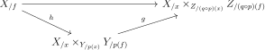
The map \(g\) is a pullback of the map that is a trivial fibration since \(p(f)\) is a \(q\)-Cartesian edge. By Proposition 2.43, \(h\) is a right fibration, so by Corollary 2.55 it follows that \(h\) is a trivial Kan fibration iff \(g\circ h\) is. □
-
Remark 2.58. An edge being \(p\)-Cartesian is equivalent to lifts always existing in diagrams of the form
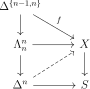
In particular in Proposition 2.48, the condition on \(f\) being an equivalence is exactly that it is \(p\)-Cartesian for \(p\) the projection to a point.
-
Proof. We are trying to show that one of the right fibrations (Proposition 2.43) \(i_0:C_{/f}\to C_{/y}\times _{D_{/p(y)}}D_{/p(f)}, i_1:C_{/h}\to C_{/z}\times _{D_{/p(z)}}D_{/p(h)}\)s a trivial Kan fibration iff the other is. Being a trivial Kan fibration is equivalent to the fibres being contractible. For simplicial subsets \(A\subset B \subset \Delta ^2\), if we define \(X_B = C_{/\sigma |B}\times _{D_{/\sigma |B}}D_{/\sigma }\), then there is a natural map \(j_{A,B}:X_B \to X_A\), which is a right fibration as it is a pullback of a map that is a right fibration by Proposition 2.43.
The map \(j_{\Delta ^{\{2\}},\Delta ^{\{0,2\}}}\) is base changed from \(i_0\) by the map \(D_{/\sigma }\to D_{/p(f)}\) which is surjective on objects, and similarly \(j_{\Delta ^{\{2\}},\Delta ^{\{0,2\}}}\) is base changed from \(i_1\). Thus it suffices to show that \(j_{\Delta ^{\{2\}},\Delta ^{\{0,2\}}}\) has contractible fibres iff \(j_{\Delta ^{\{2\}},\Delta ^{\{0,1\}}}\) does.
By Proposition 2.45, \(j_{A,B}\) is a trivial Kan fibration for any left anodyne inclusion. The inclusion \(\Delta ^{\{2\}}\to \Delta ^2\) factors as both \(\Delta ^{\{2\}}\to \Delta ^{\{0,2\}}\to \Delta ^2\) and \(\Delta ^{\{2\}}\to \Delta ^{\{1,2\}}\to \Delta ^{\Lambda ^2_1} \to \Delta ^2\), so by Corollary 2.55, it follows that \(j_{\Delta ^{\{2\}},\Delta ^{\{0,2\}}}\) is a trivial fibration iff \(j_{\Delta ^{\{1,2\}},\Lambda ^2_1}\) is. \(j_{\Delta ^{\{1,2\}},\Lambda ^2_1}\) is a pullback of \(j_{\Delta ^{\{2\}},\Delta ^{\{0,1\}}}\) by a map that is surjective on vertices (in fact, a trivial fibration) since the inclusion \(\{1\} \to \Delta ^{\{1,2\}}\) is left anodyne. Thus the result we want holds. □
The dual notion of Cartesian is coCartesian. The following is the essential point of being coCartesian. Its relation with the definition can be compared to Proposition 2.18.
-
Proof. For one direction, observe that the inclusion above is inner anodyne except for the attachment of one cell, for which the extension exists because \(f\) is coCartesian.
Conversely, if the lifting property holds, then first we can pull back \(p\) along the map \(\Delta ^n \to S\) to reduce to the case where \(S = \Delta ^n\), so that \(Y\) is an \(\infty \)-category. We are then trying to lift
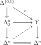
By the proof of Proposition 2.18, there is a retraction of the inclusion \(\Lambda ^n_0\times \Delta ^1\coprod _{\Lambda ^n_0\times \{0\}}\Delta ^n\times \{0\}\) to the inclusion \(\Lambda ^n_0 \to \Delta ^n\). Letting \(K = \Delta ^{\{1,2,\dots n\}}\), via the retraction, we can restrict to \(\partial K\times \Delta ^1\coprod _{\partial K\times \{0\}}K\times \{0\}\). \(\{1\}\times \Delta ^1\) is send to \(e\), so it follows that we can extend to \(K\times \Delta ^1\). Then we will have a map on \((\Delta ^n\times \{0\})\coprod _{\partial \Delta ^n\times \{0\}}(\partial \Delta ^n\times \Delta ^1)\) where the first edge is degenerate and in particular coCartesian, so we can extend to \(\Delta ^n\times \Delta ^1\), and then restrict to \(\Delta ^n\) to get our desired lift. □
The benefit of this definition is that given a pullback diagram, an edge is locally \(p\)-Cartesian iff its image is.
2.6 Minimal Inner Fibrations
The purpose of this section is to produce a theory of minimal inner fibrations generalizing that in Section 3.1. Given a diagram
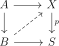
where \(p\) is an inner fibration, we say that \(f,f':B\to X\) are homotopic relative to \(A\) over \(S\) if they are equivalent in the \(\infty \)-category that is the fibre of the map \(X^B\to X^{A}\times _{S^A}S^B\).
-
Remark 2.65. The composite of two minimal inner fibrations is again a minimal inner fibration, and the pullback of a minimal fibration is too. Any functor of ordinary categories is a minimal inner fibration on nerves. In particular \(\Delta ^n\) is minimal inner fibrant. If \(f\) is an inner fibration and \(g\) is a minimal inner fibration, then \(g \circ f\) is minimal iff \(f\) is.
-
Proof. Choose a homotopy \(h:1\to f\). By induction on \(n\), we prove that \(f\) is an injection on simplices. Let \(\sigma ,\sigma '\) be \(n\)-simplices such that \(f(\sigma ) = f(\sigma ')\). By induction we know that \(f\) agrees on the boundary of the simplices.
By pasting the homotopies from \(\sigma ,\sigma '\) to \(f(\sigma )\) and the homotopy on the boundary together, we produce the diagram below and use Proposition 2.62 to find a lift.
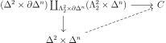
We thus obtain a homotopy relative to the boundary from \(\sigma \) to \(\sigma '\), showing they agree.
To see surjectivity, choose an \(n\)-simplex \(\sigma \) in \(C\). By the inductive hypothesis and injectivity, we can assume that \(\partial \sigma \) is in the image of \(f\). By Proposition 2.61, we can extend the homotopy \(h\) backwards along \(\sigma \) to obtain a simplex \(\sigma '\). The claim is that \(f(\sigma ') = \sigma \) to see this, we can use Proposition 2.62 to produce a lift in the diagram
where one of the edges is \(h_{|\sigma '}\) and the other is our homotopy from \(\sigma \) to \(\sigma '\). This produces a relative homotopy from \(\sigma \) to \(f(\sigma ')\), so indeed \(\sigma \) is in the image. □
2.7 Trees
Let \(C\) be a presentable category and \(S\) a set of morphisms. The weak saturation of \(S\) is obtained from \(S\) via pushouts, transfinite compositions, and retracts. Here we prove that after possibly enlarging \(S\), the weak saturation is generated by a small set of morphisms just from pushouts and transfinite compositions.
The following is a generalization of a transfinite chain of morphisms.
-
Definition 2.69. Let \(C\) be a presentable category and \(S\) be a collection of morphisms in \(C\). An \(S\)-tree in \(C\) is the following data:
-
1. An object \(X \in C\) called the root.
-
2. A partially ordered set \(A\) which is well-founded (ie any nonempty set has a minimal element)
-
3. A diagram \(A \to C_{X/}\), which will be denoted \(\alpha \mapsto Y_{\alpha }\).
-
4. for each \(\alpha \in A\), a pushout diagram
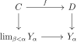
where \(f \in S\).
-
We will often use just \(\{Y_a\}_{a \in A}\) to denote an \(S\)-tree. Suppose that \(B \subset A\) is a downward closed subset. Then \(\{Y_a\}_{a \in B}\) is an \(S\)-tree. We can also let \(B_{\alpha } = B \cup \{\beta \in A | \beta \leq \alpha \}\), and \(\{(Y_{B_\alpha })_{\alpha \in A-B}\}\) is an \(S\)-tree.
\(Y_B\) denotes the colimit \(\lim _{\alpha \in B}Y_{\alpha }\) in \(C_{/X}\). In particular \(Y_{\phi } = X\).
Let \(\kappa \) be a regular cardinal. An \(S\)-tree is \(\kappa \)-good if the diagram consists of \(\kappa \)-compact objects and for each \(\alpha \in A\), the set \(\{\beta \in A| \beta <\alpha \}\) is \(\kappa \)-small.
Given an \(S\)-tree for \(X\), we can pushout along a map \(f:X \to X'\) to get an \(S\)-tree for \(X'\) called the associated \(S\)-tree. Note that \(S\)-trees naturally arise from transfinite sequences of morphisms \(X \to Y_0 \to Y_1 \to \dots \).
-
Proof. It suffices by the earlier observations to assume that \(A'' = \phi \) and \(A = A'\). Write \(A\) as the union of a transfinite sequence of downward closed subsets obtained by adding one minimal element not already there at a time. The colimit of each of these is obtained from the previous one by a pushout along a morphism in \(S\), so the map is a transfinite composition of these. □
We can modify our \(S\)-trees to become \(\kappa \)-good under reasonable hypotheses. The following lemma is the whole reason we need the notion of an \(S\)-tree: it is not true that the modification is totally ordered if the original tree is.
-
Lemma 2.71. Let \(C\) be a presentable caegory, \(\kappa \) a regular cardinal, and let \(S\) be a collection of morphisms between \(\kappa \)-compact objects. Suppose that \(\{Y_{\alpha }\}_{\alpha \in A}\) is an \(S\)-tree in \(C\). Then there exists the following:
-
1. A new ordering \(A'\) refining the order on \(A\) (ie there is a map \(A' \to A\))
-
2. A \(\kappa \)-good \(S\)-tree \(\{Y_{\alpha }\}_{\alpha \in A'}\) having the same root as before.
-
3. A natural transformation from the dagrams for \(A'\) to that for \(A\).
-
4. For any subset \(B \subset A\), the map \(Y'_B \to Y_B\) is an isomorphism where \(Y_B\) denotes the colimit for the new \(S\)-tree.
-
-
Proof. Write \(A\) as a transfinite union of posets indexed on some ordinal so that at limit ordinals, you take the union, and on successor ordinals you add a minimal element not already in the set. We will construct the new ordering satisfying the properties one at a time in compatible ways for each of these. At limit ordinals there is nothing to do. At a successor ordinal, suppose that we adjoin a map \(f \in S\) as in the diagram
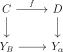
Then the map \(C \to Y_B\) factors through some \(\kappa \)-small subdiagram \(Y_B'\) which agrees with the colimit already constructed so far. Enlarge \(B'\) to be downward closed, and then modify the partial ordering on \(\alpha \) so that \(\beta \leq \alpha \) iff \(\beta \in B'\). □
-
Lemma 2.72. Let \(C\) be a presentable category, \(\kappa \) an uncountable regular cardinal, and \(S\) a collection of morphisms in \(C\). Let \(\{Y_{\alpha }\}_{\alpha \in A}\) be a \(\kappa \)-good \(S\)-tree with root \(X\) and let \(T_{A}:Y_{A} \to T_A\) be an idempotent endomorphism of \(Y_A\) in the category \(C_{X/}\). Let \(B_0\) be an arbitrary \(\kappa \)-small subset of \(A\). Then there is a \(\kappa \)-small downward closed enlargement \(B\) of \(B_0\) and an idempotent endomorphism \(T_B\) of \(Y_{B}\) such that the following diagram commutes:
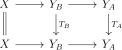
-
Proof. Assume WLOG that \(B_0\) is downward closed. We will inductively construct \(\kappa \)-small downward closed subsets \(B_i\) of \(A\) and morphisms \(Y_{B_i} \to Y_{B_{i+1}}\) extending compatible with \(T_{A}\). Taking the union of the \(B_i\), we will be done. To construct the \(B_i\), note that the map \(T_A\) composed with the inclusion of \(Y_{B_{i-1}}\) factors through a \(\kappa \)-small subset since \(Y_{B_{i-1}}\) is \(\kappa \)-small. WLOG we can assume this is downward closed and contains \(B_{i-1}\), and call it \(B_i\). This gives the desired map. □
-
Lemma 2.73. Let \(C\) be a presentable category, \(\kappa \) an uncountable regular cardinal, and \(S\) a collection of morphisms in \(C\). Let \(\{Y_{\alpha }\}_{\alpha \in A}\) be a \(\kappa \)-good \(S\)-tree with root \(X\), \(B\) a \(\kappa \)-small downward closed subset of \(A\) and let \(T_{A},T_B\) be compatible idempotent endomorphisms of \(Y_A,Y_B\) in the category \(C_{X/}\). Let \(C_0\) be an arbitrary \(\kappa \)-small subset of \(A\). Then there is a \(\kappa \)-small downward closed enlargement \(C\) of \(C_0\) and a idempotent endomorphisms \(T_C\) and \(T_{C\cap B}\) of \(Y_{C},Y_{C\cap B}\) compatible with each other and the endomorphisms for \(B\) and \(A\).
-
Proof. WLOG, \(C_0\) is downward closed. We will construct sequences of \(\kappa \)-small downward closed subsets \(C_i \subset A, i\geq 0\) and \(D_i \subset B, i >0\) along with idempotent endomorphisms on \(T_{C_i}\) and \(T_{D_i}\) such that
-
1. \(D_i\) contains \(B\cap C_{i-1}\) and \(C_i\) contains \(D_i\).
-
2. \(T_{C_i}\) is compatible with \(T_{A}\) and \(T_{D_i}\) is compatible with \(T_{B}\).
-
3. The diagrams below commute.
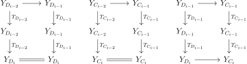
These are constructed by induction. By compactness, the third condition follows from the second if \(C_i, D_i\) are chosed large enough. By Lemma 2.72 we can then construct the desired \(C_i\). Taking the union over \(i\), we are done. □
-
-
Lemma 2.74. Let \(A\) be a \(\kappa \)-accessible presentible category. Let \(f:C \to D\) be a morophism between \(\kappa \)-compact objects of \(A\), let \(g:X \to Y\) be a pushout of \(f\) along some morphism, and let \(g':X' \to Y'\) be a retract of \(g\) in the category of morphisms of \(A\). Then there exists a morphism \(f':C' \to D'\) with the following properties:
-
1. \(C', D'\) are \(\kappa \)-compact.
-
2. \(g'\) is a pushout of \(f'\).
-
3. \(f'\) is in the weakly saturated class of morphisms generated by \(f\).
-
-
Proof. By pushing out \(g\) along the map \(X \to X'\) in the retraction from \(g\) to \(g'\), we can assume that in that retraction, \(X\) is just identified with \(X'\). In particular, the retraction is given by an idempotent \(e\) on \(Y\) with image \(Y'\).
Now \(X\) is a \(\kappa \)-filtered colimit of \(X_{\lambda }\), and since \(C\) is compact, \(C\) factors through some \(X_{\lambda }\), and taking all the things that \(X_{\lambda }\) maps to, we can refine this as a filtered colimit in \(A_{/C}\). Then \(Y\) is a filtered colimit of pushouts of \(X_{\lambda }\) and \(D\) along \(C\). Then the composition of \(D \to Y\) with \(e\) factors through some mape \(D \xrightarrow {j} X_{\lambda } \cup _C D\) since \(D\) is \(\kappa \)-compact. After possibly enlarging \(\lambda \), by compactness of \(C\), the map \(j \circ f\) agrees with the map canonical map \(C \to X_{\lambda }\cup _CD = Y_{\lambda }\). Thus \(j\) and \(id_X\) yield a map \(e'\) from \(Y_{\lambda }\) to itself. By possibly enlarging \(\lambda \), we can assume that \(e'\) is idempotent and that \(e'\) is compatible with the idempotent on \(Y\). Let \(Y'_{\lambda }\) be the image of \(e'\) (this can is the colimit of the endomorphism \(e'\)). We have a canonical map \(f':X_{\lambda } \to Y'_{\lambda }\), which is a retract of the map \(X_{\lambda } \to Y_{\lambda }\), which is a pushout of \(f\). Thus \((1)\) and \((3)\) are satisfied. To check \((2)\), we observe that the pushout square for \(X\cup _{X_{\lambda }}Y_{\lambda }\cong Y\) retracts onto the analogous square for \(Y'_{\lambda }\) and \(Y'\), showing that \(g'\) is a pushout of \(f'\). □
-
Lemma 2.75. Let \(C\) be a presentable category, \(\kappa \) a regular cardinal such that \(C\) is \(\kappa \)-accessible, and \(S = \{f_s|C_s \to D_s\}\) a collection of morphisms of \(C\) such that each \(C_s\) is \(\kappa \)-compact. Let \(\{Y_\alpha \}_{\alpha \in A}\) be an \(S\)-tree in \(C\) with root \(X\) and suppose that \(A\) is \(\kappa \)-small. Then \(\{Y_\alpha \}_{\alpha \in A}\) is isomorphic as an \(S\)-tree to one of the form \(\{Y'_\alpha \cup _{X'}X\}_{\alpha \in A}\) where \(X\) is \(\kappa \)-compact.
-
Proof. If the conclusion holds, we will say that the \(S\)-tree is pushed out from \(X'\). Write \(X\) as a \(\kappa \)-filtered colimit of \(\kappa \)-compact \(X_i, i \in I\). Choose a way to write \(A\) as a union of \(A(\lambda ),\lambda <\beta \), where each \(A(\lambda )\) is obtained form the ones before it by adding a minimal element not already there if \(\lambda \) is a successor, and by taking the union if \(\lambda \) is a limit ordinal.
We will inductively construct a (not strictly) increasing transfinite sequence of elements \(\{i_\lambda \in I\}_{\lambda \geq \beta }\) such that \(\{Y_\alpha \}_{\alpha \in A(\gamma )}\) is pushed out from \(X_{i_\gamma }\) in a way compatible for all \(\gamma \). Then we will be done since \(I\) is \(\kappa \)-filtered, there will be some \(X_i\) from which the original \(S\)-tree is pushed out from.
At limit ordinals, we can just take the limit. At a successor ordinal, we know \(A(\gamma +1)\) is obtained from \(A(\gamma )\) by adding on some element \(a_\gamma \). If \(B\) is all the things less than \(\gamma \), we have a pushout diagram
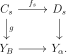
We have assumed that \(Y_B\) is a pushout \(Y^{\gamma }_B \cup _{X_i}X\) (where \(\{Y^{\gamma }_\alpha \}_{\alpha \in A(\gamma )}\) is the \(S\)-tree in the inductive hypothesis. Using \(\kappa \)-compactness of \(C_s\), \(g\) factors as through some \(Y_B^\gamma \cup _{X_i}X_j\). Let \(i_{\gamma +1} = j\), and define \(\{Y^{\gamma +1}_\alpha \}_{\alpha \in A(\gamma )}\) by having \(Y^{\gamma +1}\) being the pushout of \(f_s\) along \(C_s \to Y^{\gamma }_B\cup _{X_i}X_j\). □
-
Proposition 2.76. Let \(C\) be a presentable \(\kappa \)-accessible category, \(\kappa \) an uncountable regular cardinal, and \(\overline {S}\) a weakly saturated class of morphisms in \(C\) generated by \(S\), the subcollection of morphisms between \(\kappa \)-compact objects.
Then for every morphism \(f:X \to Y\) in \(\overline {S}\), there exists a transfinite sequence of objects in \(C_{/X}\) \(\{Z_{\lambda }\}_{\lambda < \beta }\) such that each is obtained as a pushout along a morphism in \(S\) from the limit of the ones before it, and \(Y\) is the last one.
-
Proof. By the small object argument, there is such a sequence \(\{Y_{\alpha }\}_{\alpha < \beta }\) with \(\beta \) \(\kappa \)-small such that \(Y\) is a retract of the last one \(Y_{\beta }\). We can view this as an \(S\)-tree with root \(X\). By Lemma 2.71 we can replace this with a \(\kappa \)-good \(S\)-tree \(A'\) with the same colimits at every step. Choose an idempotent map \(e\) on \(Y_{\beta }\) with image \(Y\). We will define a transfinite sequence \(B(\gamma )\) indexed by some ordinals less than \(\beta \) and compatible systems of idempotent maps \(T_{B(\gamma )}\) on \(Y_{B(\gamma )}\). On limit ordinals, we can define the limit \(T_{B(\gamma )}\) to be the union of the \(T_{B(\gamma )}\). If we reach the ordinal \(\beta \) with some \(B(\gamma )\), we can stop the construction. At limit ordinals \(B(\gamma )\) is defined by taking the colimit, and at successors, it is defined by taking a minimal element of \(A'-B(\gamma )\), applying Lemma 2.73. and defining the successor idempotent as the glued together idempotent for each piece. By Lemma 2.75, we learn that \(Y_{B(\gamma )}\) is obtained from the colimit over all the things before it by a pushout of a morphism in \(S\). Define \(Z_{\lambda }\) to be the image of the idempotent \(T_{B(\gamma )}\). The colimit of \(Z_{\lambda }\) is \(Y\), and by Lemma 2.74 each successive \(Z_{\lambda }\) is obtained from the previous by pushing out along a morphim in \(S\). □
-
Corollary 2.77. Under the hypotheses of Proposition 2.76, there is a \(\kappa \)-good \(S\)-tree \(\{Y_{a}\}_{a \in A}\) such that \(Y_A \cong Y\) in \(C_{/X}\).